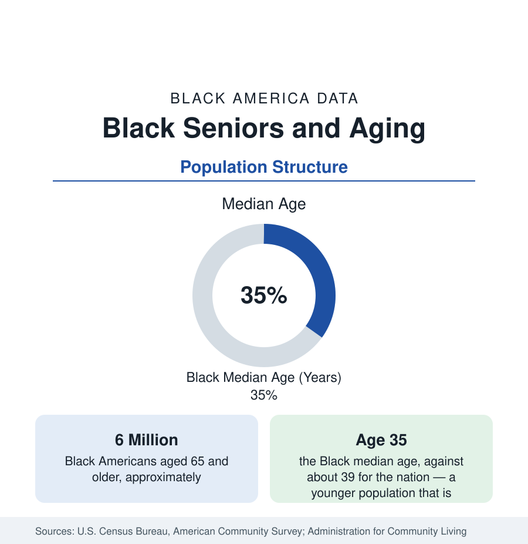

Black Census
Black Seniors: The Aging of Black America
About six million Black Americans are 65 or older — a share that will grow faster than any other segment of the population. The census data on Black aging.

About six million Black Americans are 65 years of age or older — roughly one in nine Black people, against roughly one in six Americans overall. Black America is a young population by national structure, with a median age of about 35 against the nation's 39, and its senior population is its fastest-growing segment: the cohorts of the civil-rights era are now crossing into old age in numbers that will reshape every dataset in this reference. This article reports the census data on Black seniors: their number, geography, living arrangements, income, and health profile.
The Demography of Black Aging
The Black age structure is a pyramid still wider at the base than the nation's: higher shares of children and young adults, a median age several years younger, and a senior share held down historically by the mortality data of the public health section — fewer Black Americans, proportionally, have survived to old age. That arithmetic is changing. As the large cohorts born in the 1950s and 1960s reach 65, the Black senior population is projected in the Census Bureau's national projections to roughly double across the coming three decades, growing far faster than the Black population as a whole, and the 85-and-over population — the oldest old, with the heaviest care needs — grows fastest of all. The institutions in this reference, from Social Security to the public health system, are planning against this curve.
Where Black Seniors Live
Black seniors are more Southern than Black America itself: retirement-age Black households are concentrated in the South — in the states of birth for the Great Migration generation, many of whom returned south in retirement in one of the least-counted flows of the migration data — and in the historic urban communities of the North and West, where elders anchor blocks their families have held for generations. Living arrangements follow the household data of this section: Black seniors are more likely than seniors generally to live in multigenerational households, more likely to head households containing grandchildren — roughly a million Black grandparents nationally report living with grandchildren, a substantial share of them primarily responsible for the child's care — and somewhat less likely to live in institutional settings at advanced ages than the national pattern, with family care the dominant arrangement.
Income and Social Security
The income data of Black old age rest on one pillar. Social Security provides the majority of income for most Black senior households, and for a large share — particularly among Black women living alone, the demographic with the highest senior poverty exposure — it is nearly the whole of it. Private pension and retirement-account income, the second pillar nationally, reaches Black retirees at lower rates, the late-life reflection of the coverage gaps in the employment data; the public sector is the exception that proves the rule, its pensioned retirees forming the affluent tier of the Black senior income distribution. The result in the poverty tables: Black senior poverty runs at roughly twice the overall senior rate — near one in six against one in ten — with the supplemental measure, which counts medical costs, higher still. The asset data complete the picture: the median Black senior household holds the home equity of the census section and little else.
Health in Old Age
The public health section's chronic-disease data become, in old age, a profile of accumulation: the typical Black senior manages multiple chronic conditions — hypertension near-universal in the oldest cohorts, diabetes in a third or more, arthritis, kidney disease, and cardiovascular disease layered together — with Medicare providing the coverage floor. The gaps that matter shift with age: from diagnosis to management, from mortality to disability. Black seniors record higher rates of functional limitation and dementia in the federal health surveys — Alzheimer's disease and related dementias are recorded at roughly twice the White rate among the elderly in the commonly cited estimates — and the caregiving burden falls, per the household data, on the same extended-family structures that define Black household organization.
Reading the Aging Data
Black aging is where this reference's datasets converge: the wealth gap becomes the retirement-income gap; the health gaps become the disability profile; the household structures become the care system. The six million will become ten and then twelve million on the projections' arithmetic, and every ratio in this article — poverty, living arrangement, condition count — will apply to a population twice today's size. It is the census section's clearest case of a statistic whose importance is its trajectory.
More in Black Census
The Black Population of the United States: Size, Definitions, and Distribution
The Black population of the United States totals 52.8 million — 15.4 percent of the nation. How the Census Bureau defines and counts the population, and where it lives.
Black Median Household Income in the United States
Black median household income stands at $56,490 in the Census Bureau's annual income report — how the figure is measured, how it compares, and what drives it.
The Black Poverty Rate: Levels, Children, and the Long Trend
The official Black poverty rate is 17.1 percent — against 11.1 percent nationally and 7.7 percent for non-Hispanic White Americans. How poverty is measured and what the data show.
Source: U.S. Census Bureau, American Community Survey; Administration for Community Living, Profile of Older Americans; Social Security Administration.